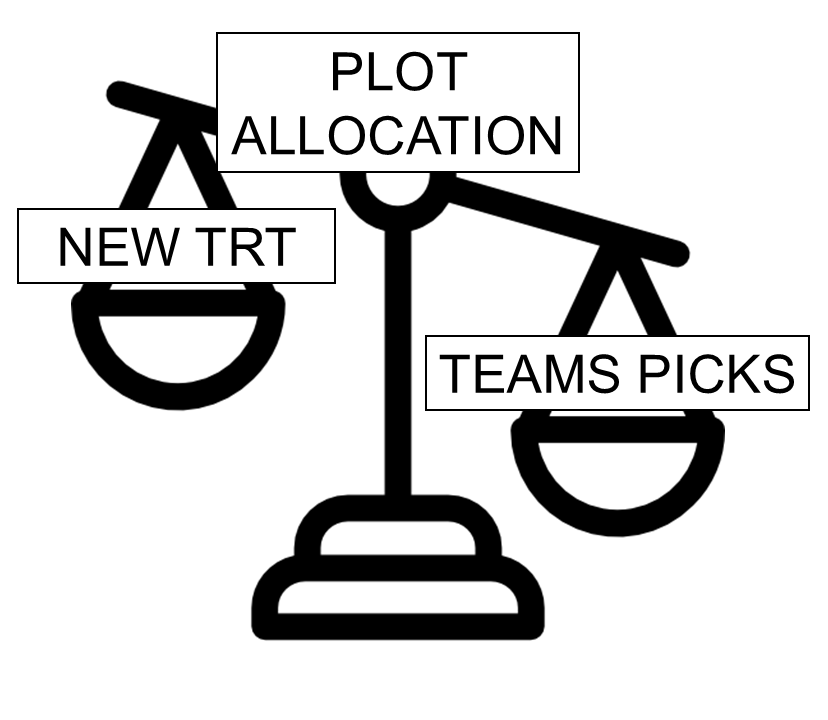

3 TAPS - some learning
3.1 What is special about TAPS designs?
Designed experiments in TAPS are typically arranged in a randomized complete block design (RCBD).

Figure 3.1: Schematic representation of a randomized complete block design.
Some TAPS designed experiments are arranged in a split-plot design.

Figure 3.2: Schematic representation of a split-plot design randomized complete block arrangement.
- Designs are D-Optimal - best to estimate the team’s yield/profit precisely.

Figure 3.3: Prioritizing our research questions often seems like a balancing act between resources allocated to the competition, and resources allocated to additional research.
3.2 An applied example
A manager is designing a competition with 24 teams signed up, and needs to decide whether to use 4 replicates or 3 replicates and allocate more resources to the research question.
Some questions:
- What is the trade-off between #reps and #points?
- How do we assign the new treatments?
Consider the following options:
| # Teams | # Reps per team | # Plots assigned to other treatments | Total plots available |
|---|---|---|---|
| 24 | 4 | 12 + 48 | 108 |
| 24 | 3 | 12 + 24 | 108 |
| 24 | 2 | 12 | 108 |
Mathematically, we can infer a few points:
- Recall that \(se(\hat{\mu_j}) =\sqrt\frac{\sigma^2}{r}\).
- Assume \(\sigma^2 = 20\) and we get:
| # Teams | # Reps per team | # Plots assigned to other treatments | SE(Teams mean) |
|---|---|---|---|
| 24 | 4 | 12 + 48 | sigma2/sqrt(4) = 0.5 sigma |
| 24 | 3 | 12 + 24 | sigma2/sqrt(3) = 0.58 sigma |
| 24 | 2 | 12 | sigma2/sqrt(2) = 0.71 sigma |
How are the estimates of N and Irr affected?
- Recall that \(se(\hat{\boldsymbol\beta}) =\sqrt{\sigma^2 (\mathbf{X}^\top\mathbf{X})^{-1}}\) and thus \(se(\hat{\beta_j}) =\sqrt{\sigma^2 (\mathbf{X}^\top\mathbf{X})^{-1}_{jj}}\).
Essentially,
\[se(\hat\beta_j) = \sqrt{\sigma^2 (r\mathbf{X}_{teams}^\top \mathbf{X}_{teams} + \mathbf{X}_{extra}^\top \mathbf{X}_{extra})^{-1}}\]